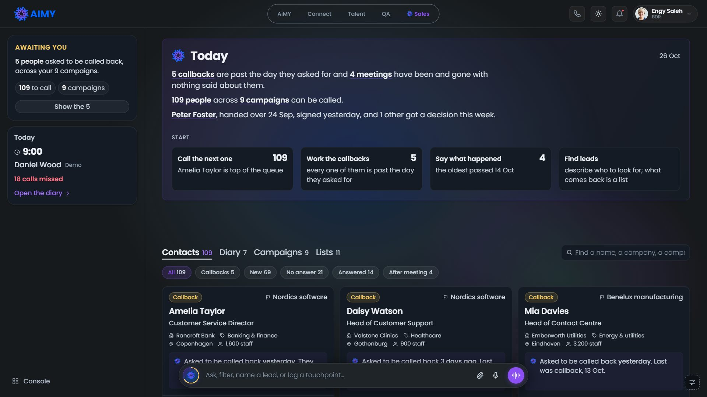

AiMY Sales Handoff
AiMY Sales is FlairsTech's AI-native sales product, built as a clickable prototype. Five people use it, from the caller who makes 200 calls a day to the CEO. This page shows every process step by step, with a link that opens each step in the prototype and a screenshot of what you should see.
How to use this page
- Designers: read the words, the desks and the shell, then work through the processes for the desk you are changing. Rules to keep lists the decisions that are already settled.
- Developers: read the desks, then the developer guide, data and state and traps before touching code. Each process names the functions behind it.
- Everyone: every process has an Open button. It opens the live prototype at the right desk and record. The prototype keeps your changes in your browser, so reset before each walk-through: press the small sliders icon at the bottom right of the prototype, then Reset to seed.
- Screenshots were taken today from a clean seed at 1536px in light mode. Click one to see it full size. Dates in the prototype move with the real clock, so a callback "due yesterday" is always due yesterday.
The words we use
The product uses these words in its copy. Use the same ones in designs, tickets and code comments.
- Desk
- One person's view of the product. There are five. The URL key
?as=picks it. - Contacts
- The people we approach. On a caller's desk this is the call queue; on a manager's desk it is their deals. Never "board" or "book".
- Account
- A company. A company that already buys from us is a customer and sits in the Accounts cut on a manager's Contacts tab.
- Campaign
- A push to win a goal, for example "4 new clients", in one market, selling one or more of our services. A manager owns it and callers work it.
- List
- A set of people found for a market. A list feeds a campaign. Every campaign has at least one.
- The ladder
- Where one lead stands with the caller. It is a stored field, moved by calls and by one-press buttons, and every move can be undone.
- Deal stage
- Where a handed-over lead stands with the manager: Not met, Scoped, Shown, Priced, then Won, Lost or Follow-up.
- Touchpoint
- One logged contact: a call, a meeting or a move. Everything the product reports is worked out from touchpoints.
- AiMY
- The assistant. It lives in the bar at the bottom of every page, answers in a card above the bar, and opens full screen as the canvas.
- Brief
- What AiMY tells you before a call ("Before you speak to …") or a meeting ("Before you meet …"). The meeting brief is reached from Prepare me.
- Say "call"
- The verb is always "call", never "ring". Write plain English: no sales slang such as "warm" or "cold" in copy.
The ladder
A call never moves a lead backwards and never lifts it out of an exit; only Undo does. Showed up and Interested are things a person saw, so they are one press each on the contact page. After Handed over the lead belongs to a manager and the caller can no longer call it.
Deal stages (manager)
Call outcomes
Seven outcomes, each on a number key: 1 Connected, 2 Callback, 3 No answer, 4 Gatekeeper, 5 Not interested, 6 Wrong number, 7 Do not call.
The five desks
One product, five readings of it. The higher the desk, the more of the company it sees and the less of it it operates. Switch desk from the profile pill at the top right, or with ?as= in the URL.
BDREngy Saleh, caller
URL: no ?as= (the default desk). Engy makes about 200 calls a day on the campaigns she is assigned to. She calls, confirms AiMY's read-back of each call, moves leads up the ladder, and hands interested leads to a sales manager. She builds lists through the chat. She does not create campaigns.
Tabs: Contacts (the call queue), Diary, Campaigns, Lists. A "Today" briefing sits above the tabs. She is the only desk with the navbar dialer.

ManagerLina Haddad, sales manager
URL: ?as=lina. Head of the Enterprise Team, often on the road meeting leads. She runs deals, meetings and campaigns, and is account manager for the client Kestrel Labs. The other two managers, Nadia Fouad (Growth) and Hazem Saad (Quality), exist in the data but have no desk.
Tabs: Today, Contacts (her deals, with an Accounts cut for customers), Diary, Campaigns, Lists. The rail adds Financials.

StakeholderSherif Amin, owns AiMY QA
URL: ?as=sherif. Owns one product line. He reads the manager's view, limited to campaigns and deals that sell AiMY QA, and operates none of it. His verbs: Request a campaign, Add a lead, Join a deal, Ask AiMY. Only his desk shows "What buyers say about AiMY QA", and only his desk starts with LinkedIn disconnected.

ClientMarit Okonjo, Kestrel Labs
URL: ?as=kestrel. A customer. Kestrel bought three things from us, called engagements: AiMY Talent (hiring), AiMY QA (software) and managed customer support (a service). A chip menu, or ?eng=reach|tool|desk, picks one. She sees Today, a Diary of meetings she is actually in with us, Campaigns we run for her (without the people in them), and "Your journey with AiMY", a quarterly report of what was promised and what happened.
She never sees our costs, how we grade accounts, or any named prospect. Contacts, Lists, Notes, contact and company pages are refused for her.

CEORami Fahim, FlairsTech CEO
URL: ?as=rami. Reads everything, operates nothing. He reads by teams ("Enterprise Team managed by Lina Haddad"). His verbs: Assign (a request, a connection, a contact nobody holds, or Reassign a deal), Join a deal, write and assign a campaign, and Ask AiMY. What he sends out comes back to him in the bell.
Tabs: Today, Contacts (the whole company), Diary (only deals he joined), Campaigns, Lists. Financials gains a Teams cut.

Who can do what
- Call: Engy and Lina. Not Sherif, Marit or Rami.
- Move a lead or a deal: Engy moves the ladder; Lina moves deal stages. Nobody else.
- Build and run a campaign: Lina. Sherif and Marit request one; Rami writes one and assigns it to a manager.
- Build a list: Engy, Lina, Sherif and Rami can find leads through the chat. Marit has no lists.
- Add a lead: every desk. A lead from Sherif or Marit goes straight to a manager.
- Join a deal: Rami and Sherif (Sherif only on his product). The meeting lands in their diary with Prepare me.
- See costs and grades: everyone except Marit.
The shell
Every desk shares one frame. It reuses the AiMY shell from Knowledge and QA: the same topnav, design tokens and components.



- Topnav: AiMY product switcher (AiMY, Connect, Talent, QA, Sales), the dialer (caller only), theme, bell, profile pill.
- Rail (left): one reading card about where you are ("Awaiting you", "Reading", "Found"), the Today/diary card, Financials or Your journey, and a Console link to the Knowledge console. Below 918px the rail becomes a drawer.
- Tabs: the page heading is the switcher. Each tab shows a count; Today shows none.
- The bar: type a question, a name, a filter, or a sentence such as "Spoke to Amelia, she wants a demo". AiMY answers in the card above. / focuses it. The mic dictates; the round button opens voice mode (needs a real microphone).
- Toasts: every change shows a toast with Undo. There are no confirm dialogs.
- Back links: "Back to …" always returns to the last view you were on, with its cut and scroll.
- Record pages: campaign
?camp=, contact?con=, account?acc=, list?list=.
Caller processes BDR
All of these run on Engy's desk. Reset to seed before each one.
B1Work the queue
- Read the Today briefing. Each underlined phrase opens the set it names.
- Use the Start strip: Call the next one, Work the callbacks, Say what happened, Find leads.
- Under Contacts, pick a cut: All, Callbacks, New, No answer, Answered, After meeting. A cut is a step on the ladder, so the cuts add up to All.
- Each card shows the step, the campaign, who they are, AiMY's reason they are here, and the number. Press Call. Fifteen cards per page; the pager is at the bottom.
- On After meeting, each card asks "They showed up" or "Did not show", one press each.
You should see: 109 to call; Callbacks 5, New 69, No answer 21, Answered 14, After meeting 4. Amelia Taylor is first.

Code: homePage, queueBlock, cuts, qcard, queue (ranking), BUCKETS, startStrip, topBrief.
B2Make a call and log it
- Press Call on Daisy Watson. The call rail opens on the right in ready, and AiMY's brief opens: Open with, Last time, If they push back, Selling, Asking for, You can send.
- Optional: choose which of our numbers to call from with the From menu. AiMY reuses the number this person has seen before.
- Press Call from …. It shows Connecting for 1.6 seconds, then live with a timer.
- Press the record button and agree to the consent question. The transcript only grows while recording.
- Press the red hang-up button. AiMY reads the call back: "I read that as connected. Is that right?", with outcome, what they asked for, checkpoint and transcript.
- Correct it by typing, or press 1–7. Then Log it, or Log it and call <next>.
- A toast confirms the log and the ladder move, with Undo.
Keyboard: Enter always does the obvious next thing (call, place, hang up, log). 1–7 pick an outcome. S skips. J/K move between cards, O opens one. Esc closes the innermost thing.


Code: startCall, callGo, callPanel, growTranscript, endCall, callLogPropose, logCall, moveFor, callPrep; fixtures SCENARIOS, CALL_SCRIPTS; numbers TEL_LINES, telPick.
B3Call a whole page in one run
- On a campaign page press Call all 15 at the end of the cuts row. On a list page it sits in the "Who is on it" header.
- The first call opens in ready. Place it, then log it as usual.
- The next call opens with a countdown and a draining bar. At zero it places itself. Call now skips the wait.
- The brief carries Skip this one and Stop the run. At the end AiMY says "That run is finished".
Where the wait comes from: default 30 seconds, 5 to 120 in steps of 5. A manager sets it on the campaign (create or Edit). A list on no campaign has its own stepper. A list on a campaign shows a locked pill: the campaign's wait wins.


Code: callAll, advance, waitStart, waitBlock, waitFor, listWaitRow, waitField, sessionSummary; stored in DELTA.wait.
B4Prepare for a video call
- Press Call Amelia. The rail says "Video call" and the button reads Start the video call; there is no From menu.
- The brief opens with a folded line "On video. 5 tips for how you come across". Open it: Open, Eye line, Posture and hands, Listening, Camera and room.

Code: onVideo, videoTips, videoBlock. Nothing in the product books a call as video yet; it comes from the seed.
B5Answer an incoming call
- Open the prototype panel (sliders icon, bottom right). Under Incoming calls choose "Somebody in your contacts calls in". Nathan Cooper calls: a phone-style widget with why AiMY thinks they are calling, and a ringtone.
- Answer (Enter) or decline (Esc). After 30 seconds it counts as missed and lands in the Call log.
- Answered, the call starts live with an inbound brief: "While you have Nathan Cooper on the line", Why they called, What to get.
- For a stranger, choose "A stranger calls in". After the call AiMY asks who it was and offers to open a contact. Type "Ruben Haverkamp, Head of Facilities at Kuijpers".


?on=missed): missed calls and voicemail.Code: ringTrigger, ringHtml, answerInbound, strangerPrep, callLogProposeUnknown, whoisMake, missedPage. The ringtone is synthesised (WebAudio); "Sound off" in the panel mutes it.
B6Dial a typed number
- Press the phone icon in the topnav. Pick the From number.
- Type
+49 13555590. AiMY reads it: "That is Daisy Watson at Valstone Clinics". - Press Call from …. An unknown number goes through the stranger read-back after the call.

Code: paintDial, dialBody, dialWho, dialGo.
B7Move a lead by hand, and hand it over
- On Benjamin Foster (meeting set), the row "What happened?" offers They showed up, They did not show, They are interested. One press moves the ladder; the toast has Undo.
- They said no (top right) asks once, then moves the lead to Declined.
- On Kate Clarke (interested), press Handover and pick a manager. The record now reads "Lina Haddad has it now" and Call disappears.
- The caller hears what became of each hand-over in her bell.


Code: contactPage, actionsRow, setCheckpoint, MOVES, endGate, mgrMenu, handover, storyBlock.
B8Find leads through the chat
- Press Find leads in the Start strip. The canvas opens: "Companies or the people at them?" Choose People.
- Type who you want, for example "Heads of customer support at banks". AiMY reads it back and may suggest one narrowing. Press That is enough.
- AiMY proposes a list name. Press Curate the list. A five-step progress runs for about 6 seconds (it asks Apollo).
- The draft list page opens, marked "Not saved yet": who came back, what is missing, and a Keep tick on each card.
- Choose Add to campaign, Save or Discard. You can also say "only ones with a number" or "call it …" in the bar.
- Leaving with an unsaved draft shows a gate at the top of the page (Save, Discard, Stay), not a dialog. The browser's Back is caught too.


Code: lbuildStart, lbuildRead, lbuildPlan, curateStart, curStepper, draftPage, draftEdit, saveDraft, leaveGate, guardBack.
B9Put a list to work
- On ls2 (not on a campaign), press Put it on a campaign. The menu says how many people fit each campaign's market. Pick one; the toast says how many joined, with Undo. The campaign's owner is told in their bell.
- On ls3, press Fill in what is missing. Cards without a number breathe for about 6 seconds while Apollo looks, then land. Found numbers last for the session only.
- From a campaign, View campaign's lists opens the Lists tab filtered to that campaign, shown as a chip you can clear.


Code: listPage, listsPage, campMenu, putOn, fillList, fillTick, enrichCon.
B10Read a company before calling
- About sits under the masthead: AiMY's summary, then groups (The company, What they do, Where they are, Size and money, Tools and links). Each group carries a mark: checked, may be out of date (Check again), or partly known (Find out more).
- News and signals shows the top opening for us, an AiMY line about the rest, and Show N more openings, which expands in place.
- Each item has Read it (the source in a new tab) and Call <name> about it, which starts a call with the item in the brief under "From the news".
- Contact pages carry About too, with public facts only: job, career, in public, where and how to reach.
- To see every state, use the prototype panel: "About, on company and contact pages" and "News, on company pages".


Code: accPage, aboutBlock, profState, profCheck, profMore, newsBlock, newsRow, newsMatters, newsUrl; stored in DELTA.news.
B11Diary, campaigns and notes
- Diary: a month grid and the day's agenda, holding callbacks she promised and meetings she set. "Missing details" lists meetings with nothing written. A Call log door sits in the header.
- Campaigns: the ones she is on. A campaign page has the goal, what we sell, the client, persona, pitch, team, then the queue, Where it stands, What is in the way, and What happened. A caller cannot edit a campaign.
- Notes: everything she wrote, by day.


Code: diaryPage, calBody, openLoop, campsPage, campPage, campLead, blockersBlock, notesPage.
Sales manager processes Manager
M1Start the day and prepare for a meeting
- Today lists today's meetings first (Noah Wright at 14:00, Henry Murphy's demo at 15:00), then Requests (only when one exists) and Connections.
- Press Prepare me for 14:00, bottom right. The canvas opens "Before you meet Noah Wright": Say this first, stage, How far to go (account tier), Who, How it started, Last time, Remember, If they push back, Selling and Why now.
- The same brief opens from Prepare me on a contact page and from the bell.

Code: mgrHome, dayBlock, meetPrep, reqBlock, connBlock.
M2Write up a meeting
- On the contact, the block "You had a discovery meeting on … What happened?" offers one press each: We met, Proposal sent, They signed, They passed, Rescheduled.
- Or type in the bar: "Had a demo with Noah Wright, it went well and they want a proposal next week". AiMY answers "Moving Noah Wright to Shown … and putting proposal to them in the diary". Press Log it.
- To close as lost, press We lost it at the top right; it asks once.
- Voice notes work the same way through the mic (needs a real microphone).


Code: stateBlock, runInput, readMeet, meetPropose, meetCommit, setStage, dealMoves, nextForStage.
M3Work the deals
- The headline says what is open ("€2.3m still open, across 37 deals") with doors to "who is not met" and "the 15 already priced".
- Cuts: All, Not met, Scoped, Shown, Priced, Lost, Follow-up. Each card says what is owed and offers Call, Say how it went, or Prepare me.

Code: dealsPage, dealsTake, dealQueue, dealSays, MGR_BUCKETS, DEAL_STAGES.
M4Look after customers
- The Accounts chip sits apart at the end of the cuts. It holds companies that already buy from us (36), ranked by what moved, not by what they pay. Its badge counts the ones that moved.
- Each card is a company: Renewing, Opening, Check in or Account, with an AiMY sentence that ties a news event to one of our services.
- Every company carries a tier shield: Gold (check in every 21 days), Silver (42), Bench (91).
- A company page offers Offer <service> for each opening.


Code: custCard, custTake, custState, openingAt, ACC_TIERS, tierOf, tierMark.
M5Close the loop on meetings
- Diary: a month grid, today's agenda, Next in the diary, and Add to calendar (fills the bar). There is no week view.
- Missing details: meetings that happened with nothing written. Say how it went puts "Had a demo with …" in the bar.
- Call log: Calls (missed, with voicemail) and Meetings (unwritten).
- Notes: by month, each line linked to its contact.


Code: diaryPage, calBody, openLoop, missedPage, logMeets, notesPage.
M6Build a campaign
- Press Build a campaign. Choose Ask me through it (chat) or I will fill it in (page).
- Chat: pick what we sell, type the market ("logistics companies in the Netherlands"), pick a goal, what counts as a win (meeting or conversation), and how many. A summary card shows everything, including the wait between calls. Press Make it.
- Page: name, goal, what we sell, client, industry, region, size, team, lists, time frame, wait between calls, persona, pitch, notes. AiMY can draft persona, aim and pitch per field, or Let AiMY fill the rest. Then Save as draft or Run it (greyed until everything it needs is there).
- On a running campaign, Edit the campaign opens the same fields. Atomic things (team, wait) change in place; prose sits behind Edit.


Code: cbuildStart, cbuildOpt, cbuildCard, cbuildMake, emptyCamp, campDraftPage, draftMiss, campRun, campFill, campSet, waitField.
M7Reach a LinkedIn connection
- On Today, Connections lists people in her network at companies that fit what we sell.
- Write the message opens the canvas with a drafted note. Add them to my contacts brings them into Contacts.

Code: connBlock, reachAll, reachDraft.
M8Read the money
- How the quarter is going (€139k of €300k), the bar, Still needed, Potential, Ahead or behind, Spent.
- What you spent it on, and Which campaigns paid off. Periods: This quarter, Last quarter, This year, Rolling 12 months. Cut by Campaigns or Services and products.

Code: moneyPage, PERIODS, cutChips.
M9Hear what arrives
- The bell holds "New to you" (who sent what since yesterday: a CEO assignment with its reason, a lead from a client or stakeholder, a request, a caller's hand-over), meetings to write up, late and quiet deals, renewals, and client promises behind.
- Hand it back on an assigned lead or request returns it to the CEO, who is told why.

Code: mgrTasks, refreshTasks, taskGo, handBack.
CEO processes CEO
R1Read the company by team
- Today: the quarter (€195k of €900k), then Teams, furthest behind first (Growth, Quality, Enterprise).
- Start strip: Assign a campaign, Prepare the weekly call, Ask what can still be caught, See Financials. The two asks answer in the card above the bar.
- Financials adds a Teams cut: "Who is making the number".


Code: mgrBlock, mgrRead, mgrPans, ceoAnswer, isWhole, teamOf.
R2Join a deal, assign, reassign
- Where you are needed suggests up to three big deals. Join it puts him on the deal: the meeting lands in his diary with Prepare me, and the manager is told. He sits on eight at most.
- On a contact nobody holds, AiMY suggests a manager with a reason he can check: "Lina runs DACH telecom, which they are on. Assign to Lina". The menu lists every manager with what they already carry.
- On a held deal the button reads Reassign; the current holder is marked "Has it now". The old manager is told in their bell.
- Connections on Today carry the same Assign strip.


Code: needBlock, needFor, joinDeal, SITS_MAX, giveStrip, giveTo, giveLearnt, give, regive, netGive; seeded with seedJoins, seedGives.
Stakeholder processes Stakeholder
S1Hear what buyers say about the product
- "What buyers say about AiMY QA" lists the reasons buyers give on calls across every campaign selling QA (features, services, pricing, timing), and what was lost this period. See it opens the campaign where each comes up most.
- Press Ask what buyers say in the Start strip, then send. The answer appears in the card above the bar.


Code: lineVoice, voiceSay, voiceBlock, isLine, myLine, onLine.
S2Connect LinkedIn and write an ask
- Connections starts empty with Connect LinkedIn. The connection is not saved: a reload starts disconnected.
- Connected, each person has Write the ask, which drafts a note in the canvas. Disconnect from the profile menu.


Code: LINKED, onLinkedIn, linkIn, reachOf, connBlock.
S3Request a campaign, add a lead, join a deal
- Request a campaign: the same builder as the manager's, ending in Request it. It waits, owned by nobody, until a manager runs it. The page version has no region, team or lists: those are the manager's to set.
- Add a lead: the bar fills "Add a lead: ". Type "Omar Nabil, Head of Quality at Nilegate Telecom, we met at GITEX". The lead goes to the manager AiMY picks; the toast names them.
- Join it on a QA deal in Where you are needed: the meeting lands in his diary, the manager is told.
- Financials are his product's only, against an €85k quarter target.


Code: cbuildStart, campAsk, readLead, giveTo, joinDeal, bookScope, TARGET_LINE.
Client processes Client
C1Read "Your journey with AiMY"
- Open the report from the rail ("Your journey") or the Start strip. It reads by calendar quarter: This quarter or Last quarter.
- "How the quarter is going" says how many promises were kept and who owns what is behind. A renewal flag shows the notice window.
- The ledger splits promises into Ours to keep and Yours. Under each of ours that is behind, AiMY says how far short and how long is left.
- Pick an engagement with the chip menu at the top right. On a staffed floor, a line links out to AiMY QA for "which goal each agent is losing".


Code: moneyPage (client branch), buyerBrief, promiseLedger, promiseGot, promDoing, qaLine, renewFlag, engChips, myDeal, reportQ, qProms.
C2Follow her campaigns
- Cards say "N of its M people reached, K handed over" and "See it". The page keeps the brief, where it stands and what is in the way, and drops the people, the queue and the day-by-day.
- "What is in the way" says what we are doing about each obstacle, in our voice, never as an instruction to a caller.


Code: ccard, campsLead, campPage, seesCost, seesGrade, isBuyer; refusals in parse.
Across desks
These flows start on one desk and finish on another. Do not reset between steps: switching desk keeps your changes.
X1The CEO writes a campaign; Lina runs it
- As Rami, press Assign a campaign, then Ask me through it, pick AiMY QA, type "banks", pick a goal, Meeting, 8, then Write it.
- The page reads "Written. Nobody has it yet". Open Assign: AiMY suggests a manager and why. Pick Lina. The pill turns to "Assigned".
- Switch to Lina. Her bell's "New to you" says Rami assigned her the request; Requests on Today shows it.
- She opens it, sets region and team, and presses Run it. Or Hand it back.
- Back as Rami, his bell says "Lina ran AiMY QA — Banking & finance".


Code: cbuildMake, campAskPage, campGive, reqBlock, mgrTasks (new-to-you, sent-moved), campRun, handBack.
X2A client requests a campaign; it is talked through first
- As Marit, press Request a campaign, Ask me through it, Managed customer support, type "retail companies", pick a goal, Meeting, 8, then Request it. The toast: sent to Lina Haddad, to talk through with you first.
- Switch to Lina and open it from Requests. Run it stays greyed until the talk happens.
- Press Set a meeting with Marit; the bar fills "Meet Marit on ". Type "Thursday at 11:00" and Enter. The meeting is in both diaries.
- After it, press We talked it through, set region and team, then Run it.


Code: clientAsk, acctMgr, talkBook, draftMiss, clientMeets.
X3Leads that cross desks
- Caller to manager: Engy hands Kate Clarke to Lina (B7). Lina's "New to you" includes it the same day; Engy's bell later says what became of it.
- CEO to manager: as Rami on Grace Ward, press "Assign to Lina". As Lina, "New to you" gives the reason.
- Manager back to CEO: as Lina on Poppy Kelly (seeded as Rami's gift), press Hand it back. Rami's bell: "Lina Haddad handed back Poppy Kelly: 37 open deals already", with Reassign it.
- Client or stakeholder to manager: Add a lead on their desk; the lead lands with a manager, tagged "Added by Kestrel Labs" where it came from a client.
Rules to keep
These are settled decisions. A change that breaks one will be sent back.
Interaction
- No modals, pickers, choice lists or drag as the only way to do something. One-click inline controls, with a toast and Undo.
- Every change can be undone from its toast. No confirm dialogs; a decision with three answers is drawn inline (the leave gate).
- Atomic controls (team, wait, tier) change in place on the record. Prose (pitch, persona, notes) sits behind Edit.
- When space runs out, the component changes form (drawer, menu, own line). Never hide a control at a breakpoint.
Visual
- No muted text. Show state with words, weight and colour, never by fading type. Nothing below the design system's
--d200for type; 14px floor. - Icons are Lucide, path data copied verbatim on the 24 grid.
- Poppins is the one face. Light and dark are both maintained.
- Anchor width is 1536px. Check 1536 and narrower; the rail is a drawer under 918px.
- Reuse the shell:
sales.css,aimy-ds.css. Sibling components from Knowledge and QA already live insales.cssunder their own prefixes; look before building.
Words
- "Call", never "ring". "Contacts", never "board" or "book". Plain English, no sales slang.
- An AiMY insight is one plain sentence behind the AiMY mark, using the page's own nouns.
- Money in words a person would say aloud: "€139k of €300k".
- Profile facts must have a public source (LinkedIn, website, register, press). No team sizes or reporting lines.
Scope
- A surface belongs to whoever does the verb on it. A roster of scored agents is AiMY QA's; Sales links to it.
- The client never sees our cost, our grades or named prospects. Check every state of a surface, not just the surface.
- The CEO and stakeholder read; they do not operate. Gate each verb where it is drawn and again in its handler.
- Follow-ups go to the bell, not onto Today.
Developer guide
What the code is
- A browser prototype with no backend and no build step. Vanilla JS, one page.
index.html: the shell (topnav, rail, bar, canvas, call rail, panels) and the asset stamps.assets/bdr.js(about 35,600 lines): the whole product. One IIFE in sections: helpers, vocabulary, corpus (seed()), store, derivations, URL, painting, router, boot.assets/bdr.css: an appendix tosales.css, numbered by section (§104 wait, §105 video, §106 About, §107 News). Only what did not exist before.assets/sales.css(shell components),assets/aimy-ds.cssandaimy-ds.js(shared design system and theme toggle),assets/voice.js/voice.css(voice mode, shared with Knowledge).assets/audit.js: nine static checks.devserver.py: local server.old/: the archived V3 build, still served at/old/.README.mdis partly stale (its top still describes a BDR-only build). Trust the code and this page.
How a page is drawn
- The URL is the state.
parse()reads these keys intoS:on, con, acc, camp, list, build, bk, bt, q, p, find, chat, as, period, by, eng, ed, lk. Defaults:on=calls,q=all,period=q,by=camp. parse()also refuses what a desk cannot read: a caller'son=dealsbecomes Contacts; a client's lists, notes, deals, contacts and companies are cleared;by=mgris the CEO's only.paint()dispatches in order:con→contactPage,acc→accPage,camp→campPage, lists, notes, missed, cal (diaryPage), money (moneyPage), deals (dealsPage), camps (campsPage), elsehomePage.go(over, replace)pushes a new URL and repaints.cleared()resets every key exceptasandeng.- One delegated click listener routes every
[data-*]attribute (data-call,data-go,data-start,data-pickopen,data-undoand so on). Menus open withdata-pickopen="<id>". - Long lists are windowed (
vlist): only about 30 rows exist at a time. The body carries CSSzoom, so it measures in layout pixels (offsetTop), notgetBoundingClientRect.
Who is reading: the predicates
me(): the current desk's person.DESKS = ['engy','lina','sherif','kestrel','rami'].onBook(): anyone but the caller.isMgr(): the sales manager.isWhole(): the CEO.isLine(): the stakeholder.isBuyer(): the client.reads(): CEO or stakeholder.works(): the opposite; gates every verb that changes something.seesCost()andseesGrade(): false only for the client. Two rules, kept separate on purpose.mine(k): whether a campaign is this desk's.
Data and state
- Seed: the corpus is regenerated from one seed (
SEED = 20260904) on every load, with dates relative to today: 11 campaigns, 200 accounts, about 600 contacts, 13 lists, about 1,900 touchpoints, plus a network of LinkedIn people. Ids come from indices (p170,a22,c4,ls2,n826), so links stay valid on any day. - Delta: only your changes are saved, in localStorage
aimy-sales-bdr:db:v1(DELTA: contact and account patches, touchpoints, lists, made records, campaigns, calendar, chats, wait, news marks, the draft list). UI settings inaimy-sales-bdr:ui, theme inaimy-ds-theme, back trail in sessionStorageaimy-sales-bdr:trail. - Writes: go through
patchCon,patchAcc,addTouch,campSet, then a debouncedsave().reindex()rebuilds the lookups (byCamp,byMgr,byLine,byClient…). - Reset: prototype panel → Reset to seed, or clear both localStorage keys. "Move everything on N days to today" (
catchUp) shifts saved dates. - Console:
window.BDRexposesdb,go,queue,reset,stats()and more. For exampleBDR.go({con:'p170'}). - Fixtures: money, telephony, Apollo, LinkedIn, news sources, usage figures. Calls follow a script picked by each contact's hidden
fate, so a demo walked twice tells the same story. - Load-bearing lists: the lengths of
SELLS(8 services) andCLIENTSdecide how the seed deals campaigns. Adding a row re-deals every figure. CompareBDR.db.camp.map(c => [c.id, c.client])before and after.
Record shapes
- Campaign:
id, name, client, target {n, noun}, persona, size, notes, goal, aim, pitch, sells[], objections[], resources[], from, to, owner, crew[], lists[], state (running | draft | asked | done), industry, region; at runtimeby, askedAt, talk, talked, givenBy, givenWhy. - Contact:
id, acc, name, title, phone, email, camps[], owner, checkpoint, checkpointAt, attempts, lastCallAt, next {what, due}, remember, dnc, fate, manager; at runtimejoined, givenBy, back. - Account:
id, name, domain, industry, city, country, region, size. - Touchpoint:
id, con, camp, by, at, secs, dir, outcome, proposals[], objections[], openings[], note, lines[], next, moved [from, to]; deal moves carryoutcome: 'phase'. - List:
id, name, kind, terms, crit, has[], by, at, for, via, found.
Run, check, ship
python devserver.py 8098 # then open http://localhost:8098/ node assets/audit.js # before every commit; read the whole output
- Use
devserver.py, notpython -m http.server: it sendsno-storeon HTML and a year's cache on stamped assets. - Stamps: every asset in
index.htmlcarries?v=(today bdr.js 1322, bdr.css 1312, the rest 1286). Bump the stamp of any file you change, from its real current value. The console logs "AiMY Sales v1322". - Audit: checks drawn-but-unwired and wired-but-undrawn
data-*, undefined classes, unusedbdr.cssrules, comment and brace balance, banned patterns (native select, inline handlers,transition: all), mixed line endings, call-script fixtures, and the target sums. It exits 1 on failure. - Commit after every verified change, on
master. - Deploy: pushing to
masterdeploys the Cloudflare Workeraimy-salesin about 90 seconds. Then check the livebdr.js?v=matchesindex.html. If the edge serves an old file under the new stamp, bump again. A clean-folderwrangler deployis the fallback;.assetsignorekeeps.git,docsand dev files off the site. - Siblings: AiMY Knowledge and AiMY QA sit beside this repo and share the shell. Check them before designing a cross-cutting fix.
Traps this repo has sprung
- Line endings: files are CRLF. Many tools flatten them and the diff hides it. Check after every write; the audit flags mixed endings.
- Shell and backslashes: heredocs and
sedcan eat backslashes, leaving a regex that is valid and matches nothing. Edit regexes in an editor. - Never delete by computed boundary. A regex-bounded deletion once removed 9,489 lines. Commit first, delete by exact text.
- Stale delta: saved changes layer over the seed. Clear them before any before-and-after comparison.
- Stamp cache: a changed file without a new stamp keeps serving the old one, locally and at the edge.
- Zoom units: rects are visual pixels and CSS lengths are not. Geometry bugs show at 1536 and up and hide on a narrow pane.
- Token overrides: each product re-declares the shell's tokens, and light-theme rules in
aimy-ds.csscan flatten a colour. Verify in the running page, in both themes. - Rename sweeps: compare whole-word and substring counts before a blanket rename; "sprung" once became "spstep".
Known gaps and open questions
- Kestrel's year has ended. Its contract is fixed at 1 Oct 2025 for 12 months while everything else moves with the clock. Since 30 Sep 2026 the client's Diary is empty, Lina's diary has no client meetings, and the desk says "last day of the year". Fix: make
sincerelative to today in theCLIENTseed. - The Diary has no week view: a month grid, one day's agenda, and the next three entries.
- No requests exist on a clean seed. The Requests block appears only after someone requests a campaign.
- A client's request does not ring Lina's bell; it shows only in Requests.
- The dialer and the From number choice exist on the caller's desk only.
- Video calls come from the seed; booking a call does not yet ask phone or video.
- The browser's own Back is not mirrored onto the "Back to …" trail.
- Voice mode and dictation need a real microphone and the browser speech API.
- Rami's "a team is behind" bell row appears only after half the quarter has passed.
- Possible, from code reading only: a known incoming call may still ring on the client desk.
- Unbuilt from the CEO plan: his own quarter number, Ask the owner, moving a running campaign, setting targets, approvals.
- The walkthrough films (local, not in the repo) predate October: no Diary for the caller, dialer, Apollo loading, voice mode or usage ring.
Every link
All open the live prototype. Reset to seed first.
BDREngy
ManagerLina
- Today · Contacts · Accounts
- Diary · Call log · Notes
- Campaigns · Edit c2 · Lists
- Financials · last quarter · by service
- p470 meeting today · p419 demo · p151 from the CEO · a22 Gold · a39 Silver
CEORami
Stakeholder and Client
- Sherif Today · QA deals · Financials
- Marit Today · Campaigns · Diary
- Journey · last quarter · Talent · QA · Support